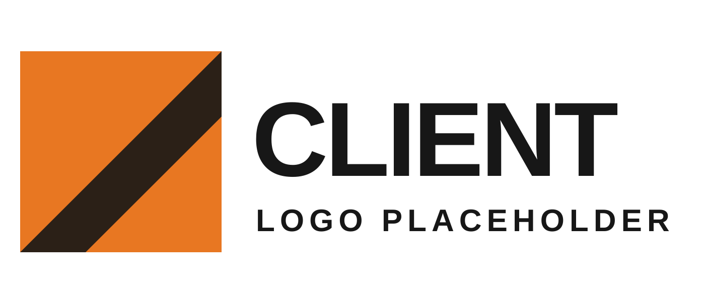
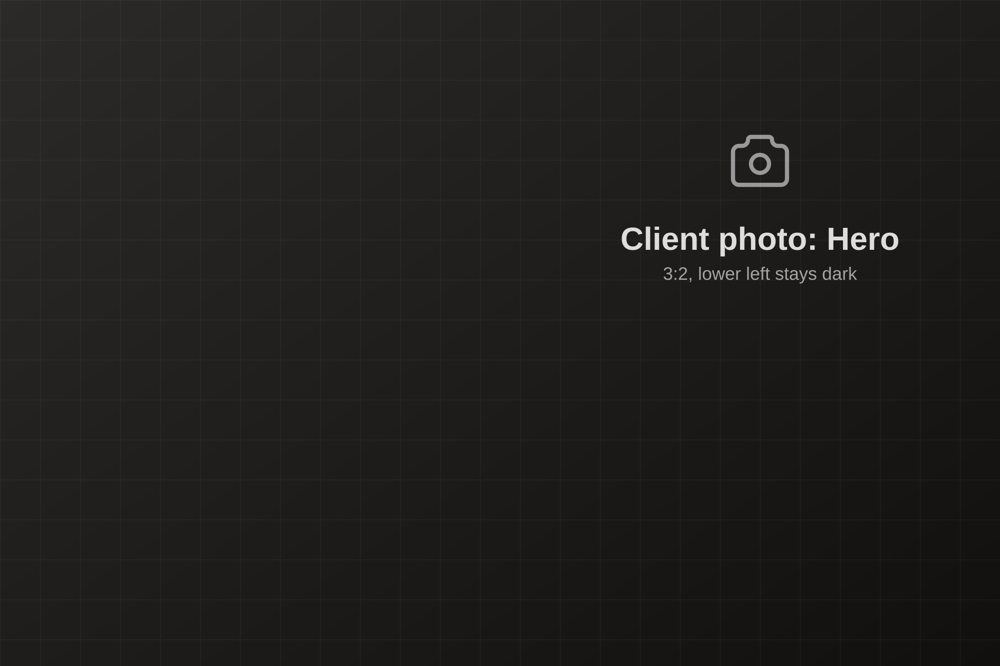
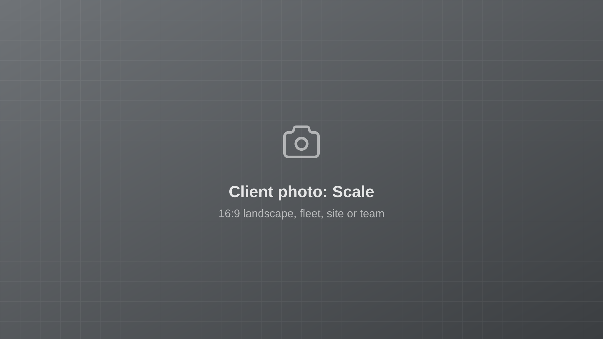
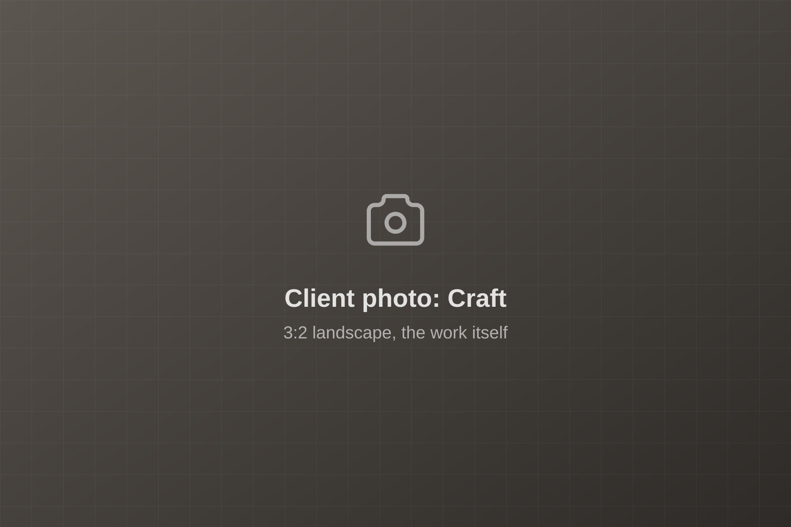
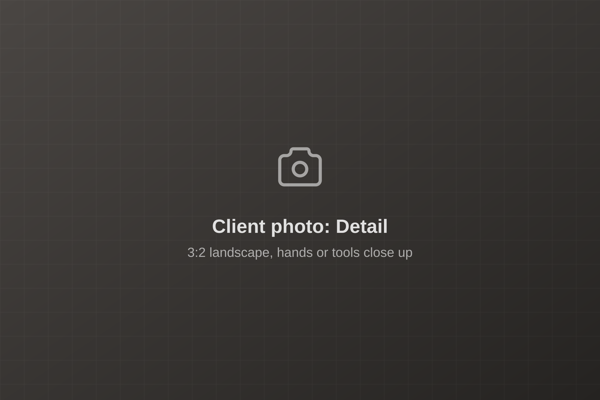

Redesign concepts
Four directions on one brand core and one component system. Each Home page is built only from the design system; switching concepts changes tokens, section variants and motion, not components. Cinematic and Engineered are the primary pair; Editorial and Kinetic are the backups. Keep the concepts the client spec names and delete the rest.
-

Primary
Cinematic
Dark and cinematic. The accent is the light in the frame. Suits a dark live site.
-

Secondary
Engineered
Light and engineered. Facts set like a title block, for buyers and procurement.
-

Alternate
Editorial
Light and people-first. One accent field, team photography, the values up front.
-

Motion-led
Kinetic
Dark glass and light in motion: a WebGL strand scene, an island nav, service tiles that morph into sheets, a card stack and a values rail. Reads like an application.